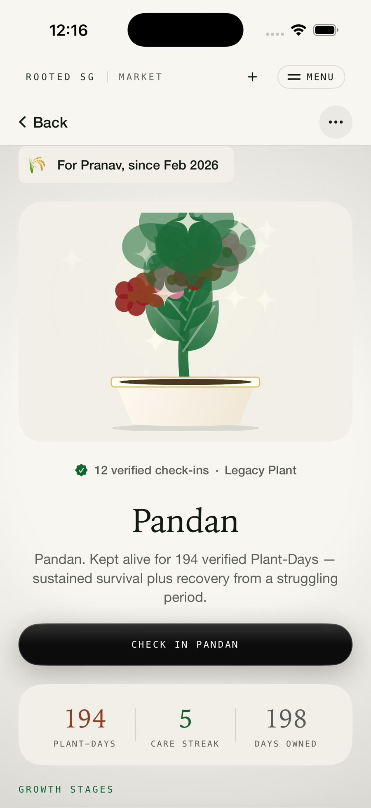
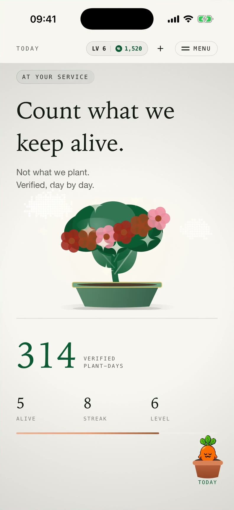
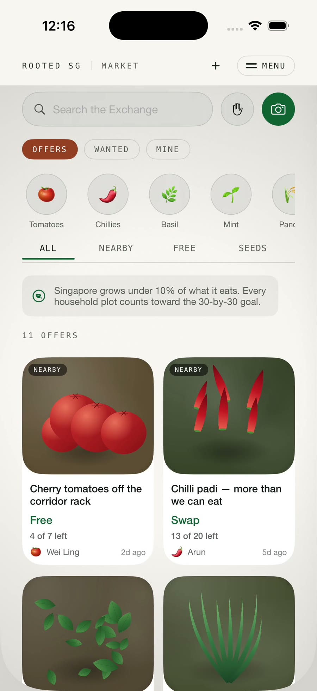
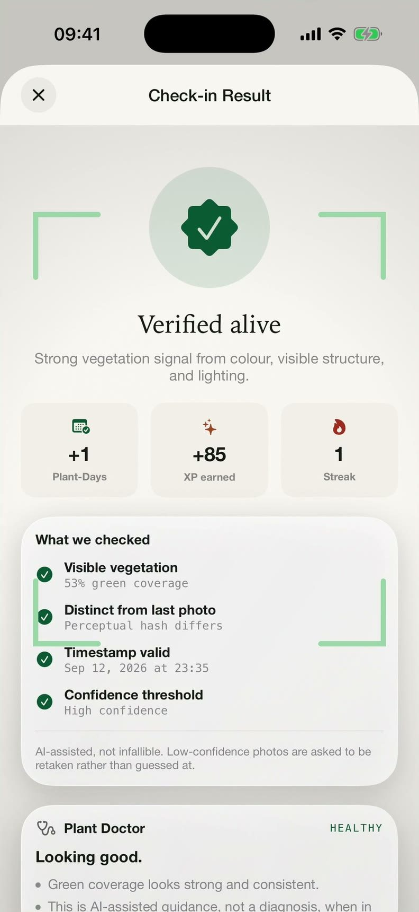
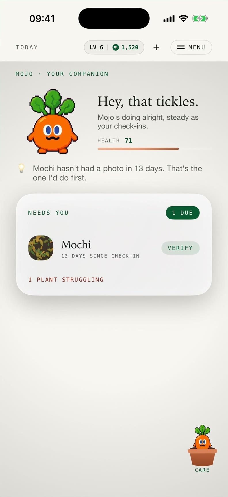
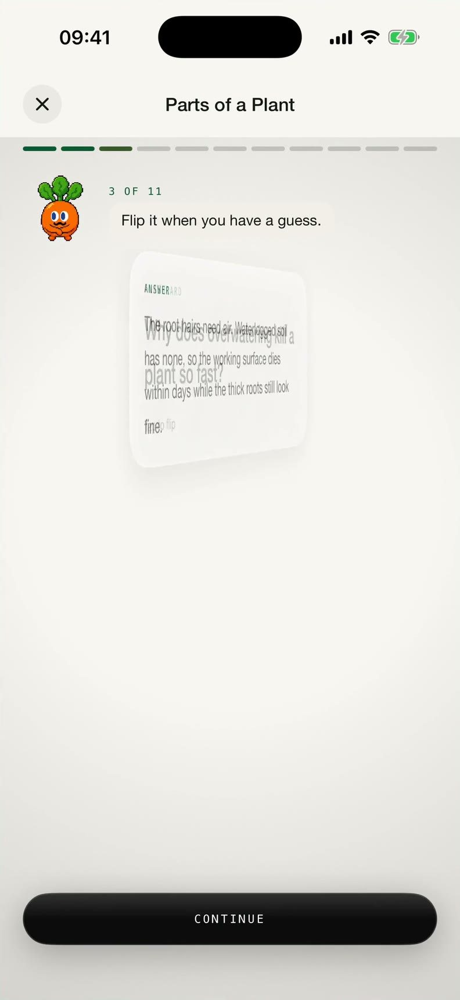
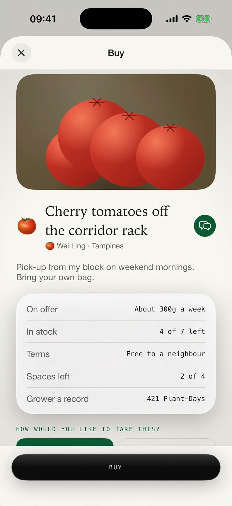
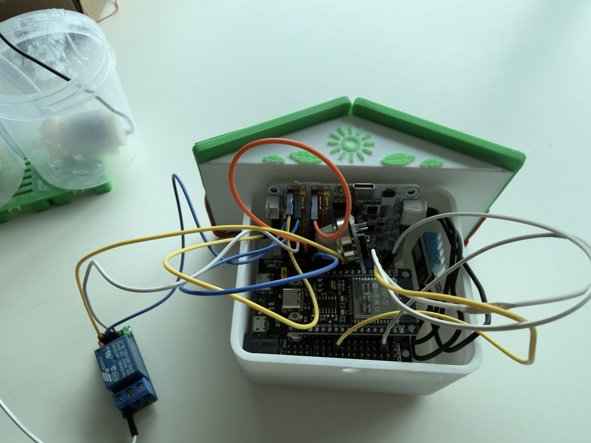
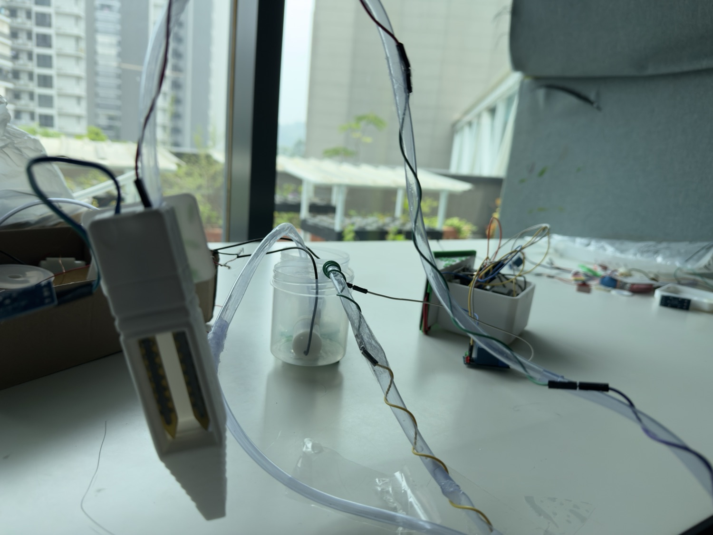
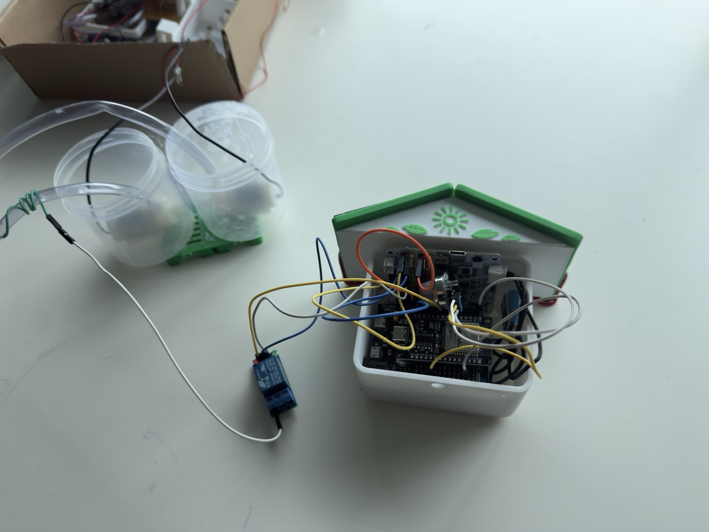

An app that only counts a plant when it is really alive, and a stake that measures the plant itself.
public homes, each with a balcony, corridor or windowsill
Housing & Development Board · over a million HDB flatsof the food we eat is imported
countries and regions it comes from
public records of how many of those plants survive
No survival record exists


Singapore residents answered our survey
want to grow plants at home
stopped, or never started
SpaceMoneyPets
Plants don't die from a lack of resources. They die from habit, knowledge and motivation.
Home plants die. Why?
Care is missed when it matters. Why?
Owners forget, or don't know what's wrong. Why?
Nothing reminds them. Nobody tells them. Why?
Nobody can see a plant struggling.
Plants die of invisibility.
12-month plant survival
A twelve-point rise in plants still alive after one year.
Survival of real home plants
Verified Plant-Days
+12 points, piloted first
Food Story 2
12 months
Less than +5 points in the pilot? We don't scale. We redesign, and publish it.


verified Plant-Days
in one garden
A character coach kept people engaged nearly twice as long as a computer or paper log.
Kidd & Breazeal, IEEE IROS 2008People respond to on-screen characters socially, like real people.
Reeves & Nass, The Media Equation, 1996Across ~12,000 diary entries, small wins were the strongest motivator.
Amabile & Kramer, The Progress Principle, 2011A relational agent was trusted and liked more, and people wanted to keep using it.
Bickmore & Picard, ACM TOCHI 2005Yellow halos, dark centres
Leaf edge mapped, area thinning
Bright enough to judge
From a whole garden, to one plant, to one leaf.
A fungus threads through the cell walls for days. Nobody can see it yet.
Focus, capture, scan: colour, fullness and light become clues.
Then a step-by-step plan, and a check-in tomorrow.

Leaf fungus: why it spreads
What helps leaf fungus spread fastest?

PlantVillage · Pl@ntNet-300K
MobileNetV3 · EfficientNet-Lite
Clues, not a verdict
Quantised and shipped on-device with Core ML and TensorFlow Lite. Zero cost per photo.
SwiftUI on iPhone · Jetpack Compose on Android
Run on every change
In our own garden, five plants
RootStake field test, every plant healthy
A small test, not an accuracy figure. We say so.
Forgetting → still checking in every week
of pilot plants still alive
No one to ask → problems caught early
Motivation → trades on Roots
Which nudges, at which hour, in which weather
The clues the Plant Doctor sees again and again
How fast a street begins swapping on Roots
simulated futures
more plants alive at 12 months · base case
verified Plant-Days · a brand-new national dataset
Every model runs on the phone. More users, no heavier servers.
Schools run their own leagues. No single person it depends on.
Roots needs no middleman. Surplus moves block to block.
community gardeners in 2,000+ groups today, and 3,000 allotment plots planned by 2030: a ready-made network.
NParks · Community in Bloom, Aug 2025 · allotment target 2030A plant never dies in a day.
It dies from being forgotten.
Thank you.



resident households in Singapore
SingStat · General Household Survey 2025households already grow something at home
NParks · about one in two · our survey: 70.9% want tohouseholds by year three, under 1% of those who grow
Our roll-out plan · school by schoolRooted SG Premium, for individuals
Plant apps charge US$30 to 50 a yearSold once, to people who want the pot to water itself
Priced from real part costsFor schools and community gardens
Starting with two pilot schoolsMore living plants, fewer journeys by ship, truck and plane
Every check-in teaches how a plant lives and fails. Schools run their own leagues
Neighbours growing together on Roots
On the phone, location kept at neighbourhood level, every sensor labelled honestly
Release both apps, build a small batch of RootStake kits, finish the stem electrode.
Schools and community gardens. Feedback from real growers decides what we build.
Expand neighbourhood by neighbourhood as we learn.
Twelve-month plant survival, against a control group.